Polo Le Rosine
Arts and culture centre in central Turin: weekly courses and workshops in painting, drawing, calligraphy, sewing, cake design, photography, theatre and music, which fund its free social projects.
27 activities coming up
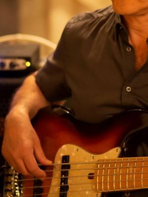
dateof your choiceMusic and theatreBass guitar course: three levelsDate of your choiceCentro (TO)with Pasquale Genzano at Polo Le Rosine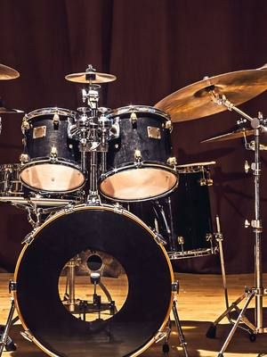
dateof your choiceMusic and theatreDrum course: children and advancedDate of your choiceCentro (TO)with Gianpaolo Petrini at Polo Le Rosine dateof your choiceCookingCake design course: sugar pasteDate of your choiceCentro (TO)with Maria Cocciolo at Polo Le Rosine
dateof your choiceCookingCake design course: sugar pasteDate of your choiceCentro (TO)with Maria Cocciolo at Polo Le Rosine- dateof your choiceFor familiesCake design for children: decorated cupcakesDate of your choiceCentro (TO)with Maria Cocciolo at Polo Le Rosine
 dateof your choicePaper and writingCalligraphy course: historical scriptsDate of your choiceCentro (TO)with Enrico Graziano at Polo Le Rosine
dateof your choicePaper and writingCalligraphy course: historical scriptsDate of your choiceCentro (TO)with Enrico Graziano at Polo Le Rosine- dateof your choiceMusic and theatreModern singing course: discover your voiceDate of your choiceCentro (TO)with Costanza Di Leo at Polo Le Rosine
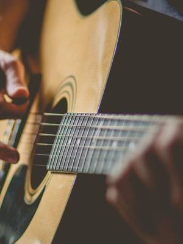
dateof your choiceMusic and theatreModern guitar course: chords and rhythmDate of your choiceCentro (TO)with Vincenzo Fiumara at Polo Le Rosine dateof your choiceTextilesSewing course: from the basics to re-fashionDate of your choiceCentro (TO)with Polo Le Rosine
dateof your choiceTextilesSewing course: from the basics to re-fashionDate of your choiceCentro (TO)with Polo Le Rosine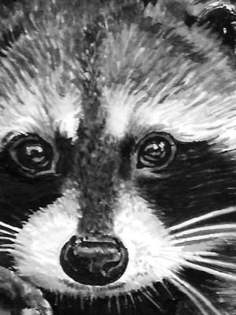
dateof your choicePaintingDrawing courses: graphite, pastel and inkDate of your choiceCentro (TO)with Barbara Sirtoli at Polo Le Rosine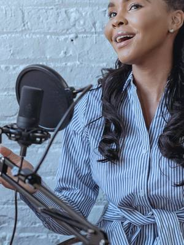
dateof your choiceMusic and theatreDiction course: voice and pronunciationDate of your choiceCentro (TO)with Giulia Cearini at Polo Le Rosine dateof your choiceOtherPhotography course: beginner and intermediateDate of your choiceCentro (TO)with Ivana Sunjic at Polo Le Rosine
dateof your choiceOtherPhotography course: beginner and intermediateDate of your choiceCentro (TO)with Ivana Sunjic at Polo Le Rosine dateto be confirmedOtherPhotography workshop: portrait and lightDate to be confirmedCentro (TO)with Ivana Sunjic at Polo Le Rosine
dateto be confirmedOtherPhotography workshop: portrait and lightDate to be confirmedCentro (TO)with Ivana Sunjic at Polo Le Rosine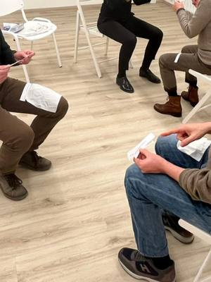
dateto be confirmedMusic and theatreA day of comedy: theatre workshopDate to be confirmedCentro (TO)with Sara D’Amario at Polo Le Rosine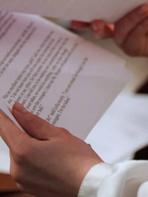
dateto be confirmedMusic and theatreA day of tragedy: theatre workshopDate to be confirmedCentro (TO)with François-Xavier Frantz at Polo Le Rosine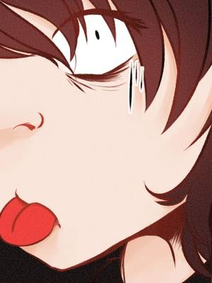
dateof your choicePaintingManga drawing course: your own characterDate of your choiceCentro (TO)with Alice Molinaro at Polo Le Rosine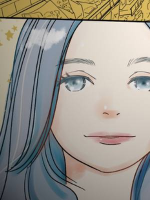
dateto be confirmedPaintingManga workshop: stories and comicsDate to be confirmedCentro (TO)with Wada Shinobu at Polo Le Rosine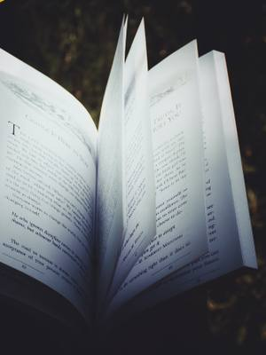
dateto be confirmedFor familiesL’omino della pioggia: theatre for childrenDate to be confirmedCentro (TO)with Giulia Cearini at Polo Le Rosine- dateof your choiceMusic and theatrePiano course: children and adultsDate of your choiceCentro (TO)with Gabriele Ughi at Polo Le Rosine
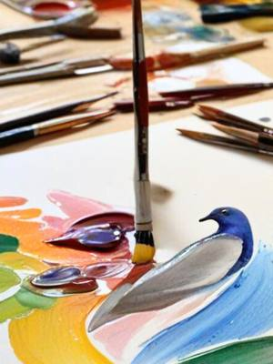
dateof your choiceFor familiesPainting course for children: colour and imaginationDate of your choiceCentro (TO)with Mery Rigo at Polo Le Rosine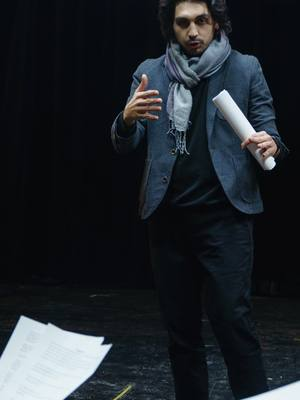
dateof your choiceMusic and theatreActing course: adults, teens and childrenDate of your choiceCentro (TO)with Polo Le Rosine- dateof your choiceMusic and theatreSongwriting course: writing songsDate of your choiceCentro (TO)with Sandro Fiorio at Polo Le Rosine
 dateto be confirmedTextilesStrappi e intrecci: journaling and weavingDate to be confirmedCentro (TO)with Marilù Lab at Polo Le Rosine
dateto be confirmedTextilesStrappi e intrecci: journaling and weavingDate to be confirmedCentro (TO)with Marilù Lab at Polo Le Rosine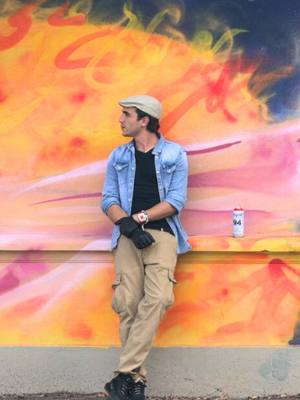
dateof your choiceFor familiesSogno Urbano: street art course for teensDate of your choiceCentro (TO)with Manuel Cantarello at Polo Le Rosine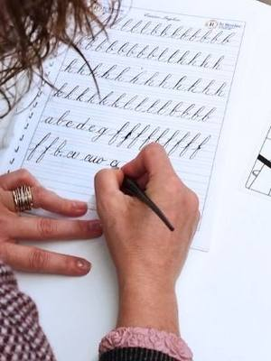
dateto be confirmedPaper and writingCalligraphy workshop: English roundhandDate to be confirmed, 10:00–18:00Centro (TO)with Enrico Graziano at Polo Le Rosine dateto be confirmedFor familiesBuilding a character: theatre for teensDate to be confirmed, 10:00–17:00Centro (TO)with Giulia Cearini at Polo Le Rosine
dateto be confirmedFor familiesBuilding a character: theatre for teensDate to be confirmed, 10:00–17:00Centro (TO)with Giulia Cearini at Polo Le Rosine everyfriPaintingPainting course: oils and the old mastersEvery Friday, 18:00–20:00Centro (TO) · 100 € for 4 lessonswith Mery Rigo at Polo Le Rosine
everyfriPaintingPainting course: oils and the old mastersEvery Friday, 18:00–20:00Centro (TO) · 100 € for 4 lessonswith Mery Rigo at Polo Le Rosine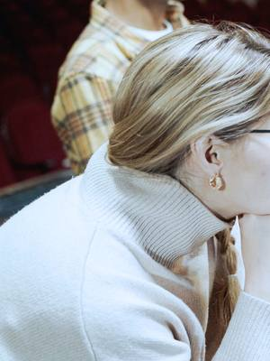
everymonMusic and theatreActing course: advancedEvery Monday, 20:00–23:00Centro (TO)with Polo Le Rosine